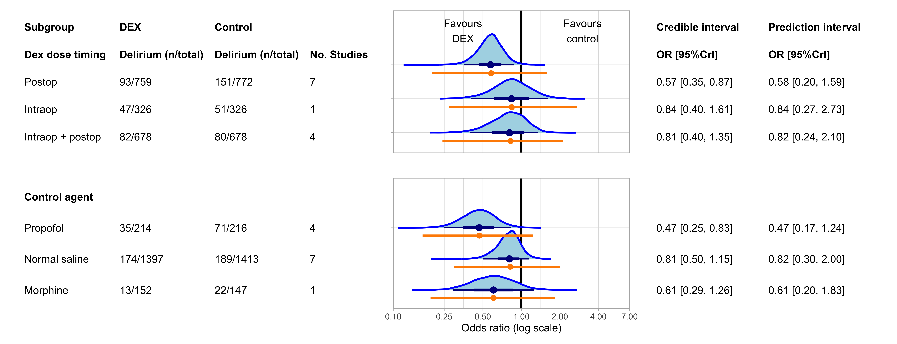

Dexmedetomidine in cardiac surgery meta-analysis
# Overall forest plotBelow in Figure 3 and Figure 4 I show the forest plot of all studies, and excluding studies at high risk of bias, respectively.
For meta-analysis, we will employ a Bayesian normal-normal hierarchical model (NNHM). It is a ‘normal-normal’ model because we assume on the first level that the within-study effects of each trial are normally distributed, and on the second level that the effects across different populations are normally distributed.
Firstly - let’s discuss the within-study normality assumption. In the NNHM we assume that each study’s observed effect \(\hat{\theta}\) is an estimate of the true effect in that trial population \({\theta}\), and the uncertainty in this estimate is modeled with a normal distribution with mean \({\theta}\) and standard deviation \({\sigma}\):
\[ \hat{\theta} \sim Normal({\theta}, {\sigma}^2) \]
In the above case, the standard deviation \(\sigma\) is the trial’s standard error. As such, estimates from studies with smaller standard errors will have narrower normal distributions and deviate less from the estimated mean effect \(\theta\). The purple lines in the forest plot below show the assumed distribution of within study effects described above.
Secondly - let’s discuss the between-population normality assumption. Here, we assume that each study’s estimate \(\theta\) is an approximation of the overall mean effect across different populations, \(\mu\). We assume that this normal distribution with mean \(\mu\) has a standard deviation \(\tau\). So, the second level of our NNHM takes the form:
\[ \theta \sim Normal(\mu, \tau^2) \]
In a Bayesian analysis, we know \(\theta\) using our estimate \(\hat{\theta}\), and we assume that \(\sigma\) is known (for which use the study’s standard error). We need to put priors on both of these \(\mu\) and \(\tau\) parameters. For our primary analysis, I have used weakly informative priors. That is, they are meant to impart some information about prior belief of the plausible range of true values, without overwhelming the data.
For \(\mu\), the prior is a normal distribution with mean 0 and standard deviation 0.82 (on the log odds ratio scale):
\[ \mu \sim Normal(0, 0.82) \]
This is a weakly informative prior because it makes values closer to null (logOR = 0) more likely but still leaves room for higher and lower values. With this prior, 95% of the density lies between an odds ratio of 0.2 and 5. This is consistent with logic, and prior evidence: we consider it unlikely that dexmedetomidine is a silver bullet for delirium (80% or greater odds reduction) or a significant driver of delirium (500% or greater odds increase).
Below in Figure 1, I graph the prior on both the logOR (A) and OR scale (B), to visualise the prior distribution. As you can see, for the distribution to be normal on the odds ratio scale, we need to take the logarithm of the x-axis (C).
For \(\tau\), the prior is a half-Cauchy distribution with scale = 0.5:
\[ \tau \sim HalfCauchy(0.5) \]
We use a half-Cauchy distribution because this is a heavy tailed distribution that only takes positive values (as we only look at ‘half’), which is appropriate for a standard deviation parameter. The ‘scale’ in a half-Cauchy distribution can be thought of as similar to a standard deviation, as it relates to the gradient of the slope (this isn’t technically true because the Cauchy distribution has undefined mean and variance, but is okay for purposes of understanding).
We can show our \(\tau \sim HalfCauchy(0.5)\) prior graphically. Somewhat arbitrarily, traditional cutoffs for heterogeneity are: Low (\(\tau < 0.1\)), reasonable (\(0.1 < \tau < 0.5\)), fairly high (\(0.5 < \tau < 1.0\)), and fairly extreme (\(\tau > 1.0\)). We can present the prior probabilities of each level of heterogeneity graphically, as shown in Figure 2 below.
As you’ll notice, the distribution is heavy-tailed, and as such we leave a high probability for significant heterogeneity. This is consistent with our belief that there is likely quite significant heterogeneity in the response to dexmedetomidine among different populations.

Finally, we will conduct metaregression further below, with more details provided. Nonetheless I will show the priors for the regression coefficient here, for completeness. For the regression coefficient we will use the same priors as we use for the intercept above: \(\beta \sim Normal(0, 0.82)\)
Putting all these together, we can show the following formulas for our NNHM:
\[\hat{\theta} \sim Normal(\theta, \sigma^2)\] \[\theta \sim Normal(\mu, \tau^2)\] \[\mu \sim Normal(0,0.82)\] \[\tau \sim HalfCauchy(0.5)\] \[\beta \sim Normal(0,0.82)\]
Before we can run the analysis, we need to consider an important issue: two of the studies were registered after enrollment began (Chitnis et al., Soh et al.), meaning there is a possibility of bias. Rather than outright exclude these studies, it would be better to try and model the suspected bias (thanks to Prof James Brophy for this suggestion). To do this, we will run a stepwise procedure. Let’s start with the Chitnis study as an example.
Firstly, the marginal effect size for Chitnis that we calculate is: OR = 0.43, 95%CI: 0.15 to 1.25. On the logOR scale, this is equivalent to logOR = -0.8341, SE: 0.5376802.
As explained above, in a normal-normal hierarchical model model meta-analysis, we assume that each study’s true effect size follows a normal distribution with mean = calculated log odds ratio and SD = calculated standard error. So, we can draw random samples from this assumed distribution using the code:
set.seed(123)
effect_dist <- rnorm(1000, -0.8341, 0.5376802)
head(effect_dist)[1] -1.135456658 -0.957861879 0.003986598 -0.796189034 -0.764584545
[6] 0.088056485But these estimates need to be modified due to possible bias arising from registration after enrollment beginning. A study by Deschartres and colleagues showed that there approximately a 19% greater effect size in studies that were unregistered or retrospectively registered (combined ROR = 0.81, 95% CI 0.65–1.02, based on 32 contributing meta-analyses).
Based on this effect size and confidence interval, we can model the ‘inflation’ component as a normal distribution with mean 0.82 (corresponding to a 1 - 0.81 = 19% increase in effect) and standard deviation = 0.1:
set.seed(123)
inflation_dist <- rnorm(1000, 0.81, 0.1)We can then multiply this bias adjustment by our assumed distribution of effect sizes from Chitnis, and take the mean and SD of the resulting distribution as the revised effect size and SE. We also need to add a for-loop because we’re on the logOR scale, with more negative values implying more benefit, so we need to be sure that ‘inflating’ the effect size means negative values are made less negative and positive values are made more positive. So, in cases where the value for inflation distribution is <1 and the value for the effect size distribution is positive, then the reciprocal of ‘inflation’ should be used (e.g., 0.80 becomes 1.25). Similarly, if the value for inflation distribution is >1 and the value for effect size distribution is positive, then the reciprocal of inflation should be used:
set.seed(123)
inflation_dist <- rnorm(1000, 0.81, 0.1)
effect_dist <- rnorm(1000, -0.8341, 0.5376802)
result <- numeric(length = 1000)
# Loop through each pair of values
for (i in 1:1000) {
# Conditionally modify inflation value
if (inflation_dist[i] < 1 && effect_dist[i] > 0) {
inflation_adj <- 1 / inflation_dist[i]
} else if (inflation_dist[i] > 1 && effect_dist[i] > 0) {
inflation_adj <- 1 / inflation_dist[i]
} else {
inflation_adj <- inflation_dist[i]
}
# Perform the multiplication
result[i] <- inflation_adj * effect_dist[i]
}
mean(result)[1] -0.6478209sd(result)[1] 0.4599308And for Soh et al., the calculated OR is: OR = 0.26, 95%CI: 0.05 to 1.31. on the logOR scale, this is logOR = -1.347074, SE: 0.8266586.
Applying the same procedure to Soh we get mean and SD:
set.seed(123)
inflation_dist <- rnorm(1000, 0.81, 0.1)
effect_dist <- rnorm(1000, -1.347074, 0.8266586)
result <- numeric(length = 1000)
# Loop through each pair of values
for (i in 1:1000) {
# Conditionally modify inflation value
if (inflation_dist[i] < 1 && effect_dist[i] > 0) {
inflation_adj <- 1 / inflation_dist[i]
} else if (inflation_dist[i] > 1 && effect_dist[i] > 0) {
inflation_adj <- 1 / inflation_dist[i]
} else {
inflation_adj <- inflation_dist[i]
}
# Perform the multiplication
result[i] <- inflation_adj * effect_dist[i]
}
mean(result)[1] -1.049854sd(result)[1] 0.7047859Now for the forest plot.
Firstly, the blue curves show the posterior shrinkage estimates of each study; that is, each study’s effect is ‘shrunk’ towards the mean when viewed in light of the other data. Kruschke and Liddell explain this best:
“Hierarchical models are especially useful because the low-level and high-level parameters are estimated simultaneously and are mutually constraining. When data from many low-level units inform the high-level distribution, the high-level distribution constrains the low-level parameters to be mutually consistent. This causes the more extreme low-level cases to be”shrunken” toward the mode(s) of the group. Shrinkage helps prevent false alarms caused by random conspiracies of rogue outlying data. Essentially, the data from the other individuals are acting as simultaneous prior information to rein in estimates of outlying individuals.”
The orange line shows the 95%CrI for the prediction interval: the range of values that would be likely to be observed be a future study of this research question. Note this is different to the credible interval, which is the range of plausible values for the mean effect size. Prediction intervals are perhaps the best summary of heterogeneity because they provide a practical interpretation: what is the range of plausible values I might observe in different patient populations?
On the right hand side we have the risk of bias assessments for each study: the five domains, and the overall assessment. ‘+’ indicates ‘Low risk’, ‘-’ indicates ‘Some concerns’, and ‘x’ indicates ‘High risk’.


1 Probability of benefit calculations
Now to calculate the probability of dexmedetomidine having certain effect sizes. In order to do this we need to transform the odds ratio into an interpretable effect size: the absolute risk reduction (ARR), or risk difference.
To go from the OR ➜ ARR, you must first use the OR to calculate the risk in the treatment group (Rt), as shown in Equation 1.
\[ R_t = \frac{R_c \times OR}{R_c(OR - 1) + 1} \tag{1}\]
Where Rt is the risk in the treatment group and Rc is the risk in the control group. For Rc, we use the median control group rate across all studies, with a different median rate for each subgroup.
The overall median delirium rate is: 16.0%
We are consider a SMD of 0.1 (equivalent to a logOR of |0.18|) to be the MCID. So assuming the above control group rate, and an OR of \(exp(-0.18) = 0.84\) to be the MCID for benefit and an OR of \(exp(0.18) = 1.20\) for harm, we can say that the Rt with the MCID for benefit will be:
\[ R_t = \frac{0.16 \times 0.84}{0.16(0.84 - 1) + 1} = 0.137 \] And the Rt for harm will be:
\[ R_t = \frac{0.16 \times 1.20}{0.16(1.20 - 1) + 1} = 0.185 \] Then, we can calculate the risk difference (Rd) in Equation 2:
\[ R_d = R_t - R_c \tag{2}\]
The typical workflow is all well and good but we can’t use it for our purposes. What we need is to calculate the required odds ratio for a given ARR and then estimate the probability of our data suggesting the odds ratio is greater or lower than that value.
So we rearrange Equation 1 to obtain Equation 3:
\[ OR = \frac{R_t(R_c - 1)}{R_c(R_t - 1))} \tag{3}\]
We are able to calculate Rt in the equation above using Equation 4:
\[ R_t = R_c - R_d \tag{4}\]
These calculations are shown below in Table 1, with tabs for all studies.
| Median control group rate (%) | Probability of any benefit (%) | Probability of ARR >MCID (2.3%)1 | |
|---|---|---|---|
| Overall | |||
| Overall | 16.0 | 99.1 | 91.0 |
| Dose timing | |||
| Intraoperative | 16.0 | 72.9 | 51.2 |
| Intraoperative + postoperative | 16.0 | 76.1 | 53.7 |
| Postoperative | 16.0 | 99.4 | 95.9 |
| Control agent | |||
| Morphine | 16.0 | 72.9 | 51.2 |
| Normal saline | 16.0 | 76.1 | 53.7 |
| Propofol | 16.0 | 99.4 | 95.9 |
| 1 Calculated by converting our specified MCID of a standardised mean difference of 0.1 to a log odds ratio (logOR = 0.18), then combining this with the specified control group rate of 16% to obtain the required ARR | |||
2 Sensitivity using other priors
Now to see if our results are sensitive to the choice of prior for 𝝁 and 𝛕.
Table 2 below shows the results using three different sets of priors. First is the informative prior, which is the prior we used for our primary analysis in Figure 3:
\[{\mu} ∽ Normal(0, 0.82)\] \[{\tau} ∽ HalfCauchy(0.5)\]
The second is the vague prior, which essentially imparts no information on the posterior estimate.:
\[{\mu} ∽ Normal(0, 4)\] \[{\tau} ∽ HalfCauchy(4)\]
Finally, we have the Turner et al. prior. Basically, in 2015 a bunch of people got together and calculated a long list of possible priors for \({\tau}\) depending on the outcome you’re looking at and the type of intervention. We’re looking at ‘pharmacological vs. placebo/control’ and the outcome type closet to our purpose is ‘infection/onset of new disease’. For this, Turner et al. recommend the prior: \({\tau} \sim Lognormal(-2.49, 1.51)\). For the mean effect we will use the weakly informative prior \({\mu} \sim Normal(0, 0.82)\). So this gives us:
\[{\mu} \sim Normal(0, 0.82)\] \[{\tau} \sim Lognormal(-2.49, 1.51)\]
As you can see below in Table 2, the choice of prior doesn’t really make a difference.
| Statistical Model | Credible interval | Prediction interval | τ |
|---|---|---|---|
| Odds ratio (median [95%CrI]) | Odds ratio (median [95%CrI]) | Median [95%CrI]) | |
| Informative* | 0.67 [0.46, 0.93] | 0.68 [0.24, 1.78] | 0.39 [0.09, 0.75] |
| Vague† | 0.64 [0.42, 0.95] | 0.65 [0.19, 1.88] | 0.46 [0.12, 0.91] |
| Turner et al.‡ | 0.70 [0.48, 0.95] | 0.72 [0.28, 1.51] | 0.32 [0.00, 0.65] |
| * μ prior: normal(0, 0.82); τ prior: cauchy(0, 0.5) | |||
| † μ prior: normal(0, 4); τ prior: cauchy(0, 4) | |||
| ‡ μ prior: normal(0, 0.82); τ prior: lognormal(-2.49, 1.52) | |||
3 Bayesian re-analysis of DECADE
Now to re-analyse the findings of the DECADE trial. Below is an overview of what we will do in this section:
Calculate priors and the minimum clinically important difference (MCID) for the DECADE trial. For priors, we will use reference and data-derived priors. Reference priors are based on possible attitudes towards this research question, and are guided by the MCID. The MCID is the minimum absolute log odds ratio above which we would consider an effect to be ‘meaningful.’ Data-derived priors are obtained from the meta-analysis excluding the DECADE trial.
Calculate the probabilities of any benefit or harm of dexmedetomidine in the DECADE trial, and effects exceeding the MCID, using the priors in step 1.
Present and compare empirical cumulative distribution function (ECDF) curves for A) the meta-analysis including all studies, B) the meta-analysis excluding the DECADE trial, C) the DECADE trial alone, and D) the shrinkage estimate of the DECADE trial.
Calculate the average treatment effect (ATE) (in the form of a risk difference and credible interval) from the DECADE trial using the priors in step 1.
For our re-analysis we will use the brms package to perform logistic regression (outcome: delirium, predictor: group).
Note
They additionally control for cardiac history in the DECADE trial (given this was ‘unmatched’ at baseline between the two groups as per their definition of ‘unmatched’) but we do not have these data, so we can’t do this. The effect on the results appears minimal.
A logit-binomial regression model is used: binomial family with logit link function. The output of this analysis is a log odds ratio - which is convenient for us, because the output of our meta-analysis is a log odds ratio, meaning we don’t have to do any interim conversions. Turan et al. report relative risks with the log link function in their GLM but this is not really best practice. See Doi et al.’s 2022 paper. For our purposes it’s appropriate to use odds ratios, especially because the odds ratio is transportable across different baseline risks (unlike the RR). However, note that this particular assertion, championed by Suhail Doi, is controversial (see this long, heated argument).
We need to consider priors for the ‘group’ coefficient for the logistic regression.
Note
You’ll notice there is a discrepancy between the prior family and the likelihood family; our prior is a normal distribution but the regression family uses a binomial (or Bernoulli) distribution. The normal distribution should approximate the binomial distribution with 794 data points, so it’s appropriate that we use normally distributed priors.
There are two approaches to informative priors here: reference priors, and data-derived priors. For these analyses I borrow various ideas from Albuquerque and Brophy, Zampieri et al., Goligher et al., and Andersen-Ranberg et al.
First, the data-derived priors.
Here, we run a Bayesian meta-analysis excluding the DECADE trial. We use a weakly informative prior for the mean effect, \({\mu}\), which is a normal distribution with mean 0 and standard deviation 0.82: \(Normal(0, 0.82)\). We also use a weakly informative prior for heterogeneity SD, \({\tau}\), which is a half-Cauchy distribution with a 0.5 scale parameter: \(HalfCauchy(0.5)\). These are the exact same priors we used for the primary analysis in Figure 3.
The code below is for the meta-analysis. It’s the same code that is used for all the other meta-analytic models in this document. IVdat_del is an escalc() object with effect sizes and variances for studies in the meta-analysis, excluding the DECADE trial.
priors_meta_analysis <- brms::prior(normal(0,0.82), class = b, coef = "Intercept") +
brms::prior(cauchy(0,0.5), class = sd)
meta_analysis_brm <- brms::brm(yi | se(sei) ~ 0 + Intercept + (1 | author1),
data = IVdat_del,
prior = priors_meta_analysis,
iter = 4000,
backend = "cmdstanr",
cores = parallel::detectCores(),
chains = 4,
seed = 123)As discussed above, the normal-normal hierarchical model for meta-analysis (which we are using here) assumes that each individual study’s effects are normally distributed (the first ‘normal’), but also that the overall effects across different populations follows a normal distribution with mean \({\mu}\) and standard deviation \({\tau}\) (the second ‘normal’). This has the notation: \(N({\mu}, {\tau}^2)\). This is why \({\tau}\) is a measure of heterogeneity; it quantifies variability in effects across patient populations.
Now, what we have done below is make the prior for the treatment coefficient in logistic regression for the DECADE trial a normal distribution with mean \(\mu\) and standard deviation \(\tau\) (both obtained from the meta-analysis (MA)):
\[ \beta_\text{treatment} \sim Normal(\mu_\text{MA}, {\tau}^2_\text{MA}) \]
We set the Intercept prior (the odds of delirium when all predictor variables are held at their reference value) to \(N(0, 1)\).
So the logistic regression model for DECADE’s results that I call in brms is as follows:
priors_regression <- brms::prior(normal(𝛍,𝛕), coef = "groupdexmedetomidine") +
brms::prior(normal(0,1), class = b)
logstic_regression.brm <- brms::brm(delirium ~ 0 + Intercept + group,
data = df,
family = bernoulli(link = "logit"),
prior = priors_regression,
iter = 4000,
backend = "cmdstanr",
cores = parallel::detectCores(),
chains = 4,
seed = 123)We also want to present analyses re-weighting the effect of the meta-analysis prior. This is done to account for perceived issues with the meta-analysis - such as publication bias (which we have assessed to be very significant), and the inclusion of low-quality studies. To do this, we present a publication-bias adjusted prior, and a prior including only low risk of bias studies.
Now for the ‘reference’ priors.
Reference priors are meant to reflect various prior attitudes towards the research question: from very sceptical to very optimistic. References priors are informed by a consideration of the minimal clinically important difference (MCID). I am going to use the MCID in two ways, which we describe in detail below:
Inform the specification of reference priors for the DECADE trial’s results.
Aid with interpretation of the clinical significance of the posterior estimates of the DECADE trial’s results.
The MCID is the threshold value for which we would consider an effect meaningful. This is a little difficult with odds ratios because most people can’t intuitively think of what a ‘meaningful’ odds ratio would be. For example if you picked a 30% odds reduction, this would decrease the rate of delirium from 40% to 32% (almost certainly meaningful) or from 5% to 3.6% (potentially not meaningful).
One way to determine the MCID is to consider the effect on the Cohen’s d (standardised mean difference (SMD)) scale. This is a standardised scale where a Cohen’s d of 0.2, 0.5, and 0.8 (somewhat arbitrarily) correspond to a small, medium, and large effect size, respectively.
Kruschke suggests that in the absence of better information, an SMD of 0.1 is a good starting point for the MCID. This is half of what would constitute a ‘small’ effect size according to Cohen. We can (approximately) convert the SMD to the log odds ratio using the formula:
\[ \text{SMD} = log(OR) × \frac{{\pi}}{\sqrt{3}} \]
This results in an MCID of |0.18| on the log odds ratio scale. This is equivalent to an odds ratio of 0.84, or a 16% reduction in the odds of delirium. Using the control delirium rate in the DECADE trial of 12%, this means we would consider a 2% absolute risk reduction (to a rate of 10% in the dexmedetomidine group) as a ‘meaningful’ reduction.
This also allows us to specify the region of practical equivalence (ROPE). This is the range of values which, from a practical perspective, are equivalent to the null (zero effect). The decision rules for the ROPE were described by Kruschke (note these are not universally embraced):
“A parameter value is declared to be not credible, or rejected, if its entire ROPE lies outside the 95% highest density interval (HDI) of the posterior distribution of that parameter … Notice that when the HDI excludes the ROPE, we are not rejecting all values within the ROPE; we are rejecting only the null value.”
So, if our posterior 95% CrI does not overlap with the ROPE we would conclude that dexmedetomidine has a non-zero effect on delirium.
And we are also provided with the flip side of this analysis:
“A parameter value is declared to be accepted for practical purposes if that value’s ROPE completely contains the 95% HDI of the posterior of that parameter.”
So, if our posterior 95% CrI falls completely with the ROPE, we would conclude that dexmedetomidine has no effect on delirium.
And finally, what is the 95%CrI and ROPE overlap?
“When the HDI and ROPE overlap, with the ROPE not completely containing the HDI, then neither of the above decision rules is satisfied, and we withhold a decision. This means merely that the current data are insufficient to yield a clear decision one way or the other, according to the stated decision criteria.”
The ROPE relates to the MCID as the upper and lower limits of the ROPE will be the values for the MCID. The specification of the limits of the ROPE is obviously subject to considerable debate. Kruschke tells us:
“In some applications, the ROPE can be specified with respect to the magnitude of conventionally”small” effect sizes for the domain of research … But just as the labeling of effect sizes as “small” depends on conventional practice, the setting of a ROPE must be made in the context of current theory, measurement abilities, and the practical purpose of the decision.”
So we’ve chosen a logOR change of 0.18 as our ‘small’ effect size. That means our ROPE is \(-0.18 < {\mu} < 0.18\) on the log odds ratio scale. But we need to check if our conclusions are robust to difference limits for the ROPE; as stated above, it is clear that wide ROPEs will favour accepting the null while narrow ROPEs will favour rejection. So, we will also consider an MCID of \(0.18 × 1.5 = 0.27\), i.e., 1.5 times greater than the original MCID, which would make our ROPE \(-0.27 < {\mu} < 0.27\).
So that covers the mean for our reference priors. But what about the prior variance? For this we consider ‘RCT equivalents’. This idea is taken from Goligher et al.’s Bayesian re-analysis in JAMA.
Basically, for the reference prior we pretend that there has been a theoretical prior RCT that reported a certain effect size (corresponding to the MCID stuff above) and enrolled a certain number of participants. We can calculate the standard error of the log odds ratio of that trial using the formula:
\[ se_i = \sqrt{\frac{1}{a_i} + \frac{1}{b_i} + \frac{1}{c_i} + \frac{1}{d_i}} \tag{5}\]
Where a, b, c, and d correspond to the 2x2 table from the ith two-group RCT analysing a binary outcome:
| Delirium present | Delirium absent | |
|---|---|---|
| Control | a | b |
| Dexmedetomidine | c | d |
For priors that are ‘sceptical’ or ‘optimistic’, we hypothesised a 1000-participant RCT showing a mean effect (on the log odds ratio scale) of: \({\theta} = 1.5 × MCID = 0.27\).
Now for calculating the standard error of the hypothetical trials. To start off, we used the formula mentioned earlier for calculating the treatment group risk \(R_t\) for each hypothetical RCT.
\[ R_t = \frac{R_c × OR}{R_c × (OR - 1) + 1} \]
In the above equation, for \(R_c\) we used the control group delirium rate in DECADE of 12% for all calculations.
Once we have \(R_t\) and \(R_c\), we can multiply these by the number of participants in that arm of the hypothetical RCT. So, for an RCT of \(n\) participants, there would be \(\frac{n}{2}\) people in each arm, so our 2x2 table would be:
| Delirium present | Delirium absent | |
|---|---|---|
| Control | \(a = R_c × \frac{n}{2}\) | \(b = (1-R_c) × \frac{n}{2}\) |
| Dexmedetomidine | \(c = R_t × \frac{n}{2}\) | \(d = (1-R_t) × \frac{n}{2}\) |
Then we calculate the standard error using the above formula in Equation 5 with the corresponding values for a, b, c, and d.
With all that in mind, we have used the following reference priors for the DECADE’s results:
- Vague: \(Normal(0, 10)\). This is an essentially flat prior which imparts no information on the posterior estimate.
- Sceptical: \(Normal(0.27, 0.186)\). Equivalent to an RCT enrolling 1000 people and showing a 31% increase in the odds of delirium (\(MCID × 1.5\)) with dexmedetomidine.
- Neutral: \(Normal(0, 0.355)\). 95% of the probability density lies between an odds ratio of 0.5 to 2.0. This is a reasonable prior to reflect the attitude of someone who thinks dexmedetomidine is equally likely to have a beneficial or harmful effect, and smaller effects are more likely than bigger ones.
- Optimistic: \(Normal(-0.27, 0.206)\). Equivalent to an RCT enrolling 1000 people and showing a 24% reduction in the odds of delirium (\(MCID × 1.5\)) with dexmedetomidine.
3.1 Posterior probabilities with different priors
Figure 5 shows the distributions of the priors. The top two panels show the distribution of the (A) reference priors, and (B) meta-analysis priors. The bottom forest plot shows the posterior distribution of DECADE’s results for each prior. The grey region denotes the ROPE. The purple lines show the DECADE’s findings when analysed alone. The grey lines represent the prior. Regions of the posterior that suggest benefit (OR < 1) are shaded in blue and those that suggest harm (OR > 1) are shaded in red. The probabilities of any harm or benefit, and the harm or benefit exceeding the MCID, are shown for each prior.
3.2 Priors explanations
| Prior | Prior equivalent | Rationale for prior |
|---|---|---|
| Reference priors | ||
| Vague | No information imposed on posterior estimate | Does not favour one prior belief over another |
| Sceptical | Equivalent to a hypothetical n = 1000 RCT showing a 31% increase in odds of delirium | This effect size is 1.5 times the MCID for harm (logOR of 0.27) |
| Neutral | 95% of the density lies between an odds ratio of 0.5 to 2.0 | Plausible values for the effect are likely, with values closer to the null most likely |
| Optimistic | Equivalent to a hypothetical n = 1000 RCT showing a 24% decrease in odds of delirium | This effect size is the 1.5 times MCID for benefit (logOR of -0.27) |
| Meta-analysis priors | ||
| MA (all studies) | Meta-analysis of n = 2745 participants across 11 trials | This is analogous to the result of a standard meta-analysis of all 12 studies, including the DECADE trial |
| MA (low RoB) | Meta-analysis of n = 787 participants across 3 trials | This attempts to attenuate the effects of various research bias parameters but using only high-quality studies |
| MA (bias adj.) | Meta-analysis of n = 2745 participants across 11 trials averaged across models accounting for publication bias | This attempts to attenuate the influence of publication bias in the literature |
3.3 ARR table
Below we provide direct probability statements for the DECADE trial’s results given each priors we specified above.
We have chosen to present the risk of any harm or benefit, and the harm exceeding the MCID for benefit and harm (calculated by conversion of a logOR of +/-0.18 using the median control group rate of delirium in the DECADE trial).
All ARRs in Table 3 below use avg_comparisons() function from the marginaleffects package to obtain risk differences as the measure of effect. It does this via g-computation.
| Posterior probability that the change in absolute risk from DECADE is above/below a certain threshold | ||||
|---|---|---|---|---|
| ARR >MCID for benefit (ARR = 2.3%) | ARR >0% | ARI >0% | ARI >MCID for harm (ARI = 2.5%) | |
| Reference priors | ||||
| Vague | 0.1 | 1.5 | 98.5 | 85.4 |
| Sceptical | 0.0 | 0.6 | 99.4 | 83.0 |
| Neutral | 0.2 | 3.8 | 96.2 | 73.5 |
| Optimistic | 3.4 | 27.3 | 72.7 | 18.8 |
| Meta-analysis priors | ||||
| MA (all studies) | 17.0 | 63.7 | 36.3 | 3.0 |
| MA (low RoB) | 10.1 | 46.2 | 53.8 | 9.5 |
| MA (bias adj.) | 0.2 | 3.4 | 96.6 | 70.9 |
3.4 Shrinkage OR estimation + ECDFs
Now let’s zoom on the relative distributions of the mean effect when we include and exclude the DECADE trial from the meta-analysis. For this we will use empirical cumulative distribution function (ECDF) plots.
I consider four density functions: meta-analysis including DECADE, meta-analysis excluding DECADE, DECADE alone, and the DECADE shrinkage estimate from the meta-analysis.
The x-axis is common to the upper and lower graphs so one is able to read off the probability of any odds ratio for any of the four curves. Figure 6 shows the results. The grey region denotes the ROPE (\(log(OR) = ± 0.18\)).


3.5 Average treatment effect estimation
To this point, we have been using odds ratios (from logistic regression) in various fancy ways to generate other helpful statistics (probabilities of harm, benefit, etc.).
But odds ratios are not infallible. Firstly, there is the issue of noncollapsibility.
“Noncollapsibility is a noncausal phenomenon in which a measurement on a group does not equal a designated average of the same measurement over its constituents, as illustrated by how group odds are not simple averages of individual odds when the odds vary across individuals”
Blogs by Cameron Patrick and Solomun Kurz provide excellent overviews of non-collapsiblity and obtaining non-odds ratio estimates from logistic regression. See also Frank Harrell’s comments for a great example of non-collapsbility.
For our purposes, the noncollapsbility of ORs means that our marginal OR from DECADE is not a weighted average of possible hidden subpopulations. Another effect of non-collapsiblity is that the effect estimate will change when adjusting for a variable that is not a confounder, while it does not change for collapsible measures (e.g., relative risk).
Another issue is that odds ratios are not a true measure of the ‘average treatment effect (ATE)’. Some have also referred to the ATE as the “difference in probabilities”, “discrete differences,” or “discrete change.” The ATE is a population-level summary of the effect of an intervention. A true measure of the ATE is, for example, the risk difference.
3.5.1 ATE table
So, let’s get into estimating the ATE, in the form of the risk differences obtained from an ANOVA-type logistic regression model. For this we will use the avg_comparisons() function in the marginaleffects package, which calculates estimates from brms (and frequentist) models.
| Risk difference % (DEX - placebo) | 95% CrI | |
|---|---|---|
| Reference priors | ||
| Vague | 5.2 | 0.4, 10.0 |
| Sceptical | 4.2 | 0.9, 7.5 |
| Neutral | 3.9 | -0.4, 8.1 |
| Optimistic | 1.1 | -2.6, 4.6 |
| Meta-analysis priors | ||
| MA (all studies) | -0.6 | -4.0, 2.7 |
| MA (low RoB) | 0.2 | -3.5, 3.8 |
| MA (bias adj.) | 3.8 | -0.3, 7.9 |
3.6 Combined plot
4 Metaregression
Now let’s consider how the effect of dexmedetomidine may across populations vary due to various factors. This is called metaregression, which is just the meta-analysis equivalent of multivariable linear regression. By glancing at it, it just looks like subgroup analysis, which is correct. Subgroup analysis is just a form of metaregression with a categorical moderator.
Below I’ve used similar priors as I used for our primary analysis. Although, here we are interested in the moderator coefficient, rather than the intercept coefficient. So my prior for the coefficient of interest is \(N(0, 0.82)\) while for the intercept coefficient it is \(N(0, 1)\). Given it’s the treatment coefficient we’re interested in, we’re using the \(Normal(0,0.82)\) prior for the same reason as described above for the primary analysis. I also retain the same \({\tau}\) priors as in our primary analysis: \(Cauchy(0, 0.5)\). In summary, our priors are:
\[Intercept \sim Normal(0, 1)\] \[\tau \sim HalfCauchy(0.5)\] \[\beta_\text{treatment} \sim Normal(0, 0.82)\]
And the code for priors using brms is:
priors_metareg <- brms::prior(normal(0, 1), class = b, coef = "Intercept") +
brms::prior(cauchy(0,0.5), class = sd) +
brms::prior(normal(0,0.82), class = b)The results in the following code for the model (where ‘covariate’ is the moderator variable):
m.brm_covariate <- brm(yi | se(sei) ~ 0 + Intercept + covariate + (1 | author1),
data = IVdat_del,
prior = priors_metareg,
iter = 4000,
backend = "cmdstanr",
cores = parallel::detectCores(),
chains = 4,
seed = 123))In the plot below Figure 8, the blue curve is the posterior distribution of the regression coefficient draws for each outcome. The orange line is the prediction interval.
4.1 Forest plot all subgroups

4.2 Explained variability
Now to look at how much heterogeneity our moderators actually explain. A great overview is provided by Wolfgang Vietchbauer.
Basically, we can compare the values for \(\tau^2\) in the adjusted and unadjusted model.
To calculate the proportion of explained variability (pseudo\(R^2\)), we can use the formula:
\[ R^2 = \frac{\tau^2 (\text{unadjusted model}) - \tau^2 (\text{adjusted model})}{\tau^2 (\text{unadjusted model})} \]
Given we have a distribution of posteriors for \(\tau\), rather than an estimate (as they do in frequentist analysis), let’s use the median \(\tau\) from our distribution.
| Median τ² | Proportion of R² | |
|---|---|---|
| Overall | 0.16 | NA |
| Dose timing | 0.13 | 16.5% |
| Control agent | 0.11 | 30.4% |
4.3 Comparing subgroups
The idea for this analysis was obtained here.
We will conduct hypothesis tests to compare the levels of the factor in the multilevel model.
4.3.1 Figure
Let’s start by plotting the posterior distributions for each of the variables’ levels.
4.3.2 Tablulated
Now let’s use the brms function brms::hypothesis() to compare levels of the variables.
The includes the (one-sided hypothesis test) evidence ratio, which is described by Paul Buerkner as:
“That is, when the hypothesis is of the form a > b, the evidence ratio is the ratio of the posterior probability of a > b and the posterior probability of a < b. In this example, values greater than one indicate that the evidence in favor of a > b is larger than evidence in favor of a < b.”
| Evidence ratio1 | Posterior probability | Estimate (95% CrI) | |
|---|---|---|---|
| Dose timing | |||
| Intraoperative (any benefit) | 2.40 | 0.71 | -0.18 (-0.75 to 0.36) |
| Intraoperative + posteropative (any benefit) | 3.35 | 0.77 | -0.22 (-0.75 to 0.24) |
| Postoperative (any benefit) | 180.82 | 0.99 | -0.56 (-0.94 to -0.21) |
| Intraoperative + postoperative superior to intraoperative | 1.14 | 0.53 | -0.04 (-0.73 to 0.60) |
| Intraoperative + postoperative superior to postoperative | 0.20 | 0.17 | 0.33 (-0.27 to 0.90) |
| Postoperative superior to intraoperative | 5.47 | 0.85 | -0.37 (-1.00 to 0.25) |
| Control agent | |||
| Morphine (any benefit) | 10.25 | 0.91 | -0.50 (-1.11 to 0.12) |
| Propofol (any benefit) | 136.93 | 0.99 | -0.76 (-1.26 to -0.27) |
| Normal saline (any benefit) | 8.22 | 0.89 | -0.23 (-0.59 to 0.07) |
| Propofol superior to morphine | 2.57 | 0.72 | -0.26 (-0.99 to 0.44) |
| Propofol superior to normal saline | 12.89 | 0.93 | -0.53 (-1.09 to 0.07) |
| Normal saline superior to morphine | 0.33 | 0.25 | 0.27 (-0.43 to 0.93) |
| 1 This is the ratio of the posterior probability of a > b and the posterior probability of a < b. Values >1 are evidence in favour of the specified hypothesis. | |||
5 Secondary outcomes
Now for the secondary outcomes. For these we used the same priors as in our primary analysis for binary outcomes.
For the continuous secondary outcomes, slightly different priors were required. Our NNHM remains the same, but now we need to specify a meaningful prior for a mean difference rather than an odds ratio. We have chosen a normal prior with mean 0 and standard deviation 1. That is, 95% of the density is around -2 to 2. This again is a weakly informative prior - we expect that dexmedetomidine may affect outcomes such as length of hospital stay, but it is unlikely that the magnitude of effect is greater than a 2 day difference. We will use the same prior for the coefficient \(\beta\) in metaregression of continuous secondary outcomes. We will use the same priors for \(\tau\). So, for our continuous secondary outcomes, the formulas for our NNHM are:
\[\hat{\theta} \sim Normal(\theta, \sigma^2)\] \[\theta \sim Normal(\mu, \tau^2)\] \[\mu \sim Normal(0,1)\] \[\tau \sim HalfCauchy(0.5)\] \[\beta \sim Normal(0,1)\]
5.1 Forest plot
For the ‘Mean (SD)’ columns for the continuous outcomes, we used the unweighted grand mean (means of all the studys’ means and SDs). As such, these numbers as essentially arbitrary (because means from tiny studies are weighted equally to means from massive studies). We just present these numbers to give the reader an idea of the sorts of values that were observed in the included studies.
5.2 Probability of harm calculations
Let’s also look at the probability of dexmedetomidine causing various levels of harm, in the form of bradycardia and hypotension. This is equal and opposite to Table 1. Table 7 below shows the relevant figures.
| Median control group rate (%) | Probability of any harm (%) | Probability of harm >MCID | |
|---|---|---|---|
| Bradycardia | |||
| Overall | 7.5 | 67.3 | 37.1 |
| Hypotension | |||
| Overall | 54.2 | 35.6 | 14.1 |
6 Small study effects
We will use two Bayesian methods of sample study effects assessment: Bayesian regression testing and Bayesian model averaging.
6.1 Bayesian regression test
Arguably the most popular method of sample study effect assessment is through analysis of funnel plot asymmetry, in the form of Egger’s regression test (and variants therein). This test involves regressing the effect sizes of studies according to their precision; slopes that are significantly different from 0 suggest sample sample effects. This can also be applied in a Bayesian framework, and was described recently by Shi et al. The interpretation regarding the slope is similar to the frequentist Egger’s test. Shi et al. use the latent “true” SEs in the Egger-type regression under the Bayesian framework.
Like many sample bias tests, this actually assesses funnel plot asymmetry (of which publication bias is only 1 cause).
For a list of alternative causes of funnel plot asymmetry, see Harrer et al.
Briefly, they are:
- Between-study effect heterogeneity
- Heterogeneity in types of feasible methods of small vs. large studies
- Small studies being more poorly run than large studies
- Random change
There are various options for inputs. We will use multiplicative heterogeneity rather than additive heterogeneity. We will use a half-normal prior with 0.5 scale parameter (Cauchy distributions are not available but the difference is likely trivial). The default vague priors for the regression intercept and slope are used: \(N(0, 10^4)\), as this is the approach use for the model’s validation in Shi et al.
As you can see in Table 8, the 95%CrI for the slope excludes 0, whether looking at all studies or excluding studies at high risk of bias. This suggests the presence of publication bias.
6.2 All studies
Compiling model graph
Resolving undeclared variables
Allocating nodes
Graph information:
Observed stochastic nodes: 36
Unobserved stochastic nodes: 29
Total graph size: 277
Initializing modelCompiling model graph
Resolving undeclared variables
Allocating nodes
Graph information:
Observed stochastic nodes: 30
Unobserved stochastic nodes: 25
Total graph size: 233
Initializing model| Estimate | 95% credible interval |
|---|---|
| All studies | |
| 3.86 | 2.41, 5.50 |
| Excluding studies at high risk of bias | |
| 3.52 | 1.83, 5.28 |
6.3 Bayesian model averaging
Bayesian model averaging is well described by Bartos et al.:
“In practice, researchers seldom have knowledge about the data-generating process nor do they have sufficient information to choose with confidence among the wide variety of proposed methods that aim to adjust for publication bias. Furthermore, this wide range of proposed methods often leads to contradictory conclusions. The combination of uncertainty about the data-generating process and the presence of conflicting conclusions can create a”breeding ground” for confirmation bias: researchers may unintentionally select those methods that support the desired outcome. This freedom to choose can greatly inflate the rate of false positives, which can be a serious problem for conventional meta-analysis methods.”
The RoBMA packages generates three families of models across 12 models (interfacing with JAGS through rjags), and averages their performance. A total of 32 of these models include publication bias and 4 do not. For a description see this link. The output includes an inclusion Bayes factor. The Bayes factor is the ratio of two marginal likelihoods (i.e., two probabilities of data given certain models). We will produce Bayes factors for the mean effect, heterogeneity, and publication bias.
The “inclusion” part of “inclusion Bayes factor” refers to the fact we are comparing the alternative hypothesis relative to the null hypothesis. Hence our notation for the bayes factor is \(BF_{10}\) rather than \(BF_{01}\), which is another kind of Bayes factor that compares the null hypothesis relative to the alternative hypothesis. So, for the mean effect, our null model is \(H_0: {\mu} = 0\) and alterative model is \(H_1: {\mu} ≠ 0\). Then, the inclusion Bayes factor is:
\[ BF_{10} = \frac{p(data | H_1)}{p(data | H_0)} \] Bayes factors answers the question: Are the observed data more probable under models with a particular effect, than they are under models without that particular effect? Inclusion Bayes factors >3 indicate ‘substantial’ evidence against the null, while inclusion Bayes factors <1/3 indicate ‘substantial’ evidence for the null.
The benefit provided by the model averaging approach is that we are provided with an inclusion Bayes factor for publication bias. A high inclusion BF for publication bias would suggest that models accounting for publication bias are more consistent with the observed data. We are also provided with an estimate that accounts for publication bias.
Publication bias models include selection models and PET-PEESE models as methods of publication bias assessment. The publication bias adjustment prior is described in Bartoš (2021).
Table 9 shows the results.
6.3.1 Summary
| Number of models | Prior probability | Posterior probability | Inclusion Bayes factor | |
|---|---|---|---|---|
| Models accounting for publication bias | ||||
| Effect | 18 | 0.50 | 0.37 | 0.58 |
| Heterogeneity | 18 | 0.50 | 0.44 | 0.77 |
| Publication bias | 32 | 0.50 | 1.00 | 214.18 |
| Models not accounting for publication bias | ||||
| Effect | 2 | 0.50 | 0.79 | 3.73 |
| Heterogeneity | 2 | 0.50 | 0.92 | 10.97 |
| Publication bias | 0 | 0.00 | 0.00 | 0.00 |
6.3.2 Estimates
Below we present the model-averaged estimates from the robust Bayesian meta-analysis. We present model-averaged estimates (averaged across models assuming the null is true, and models assuming the alternative hypothesis is true) as well as conditional estimates (averaged over only models that assume the alternative hypothesis is true).
| Mean | Median | 2.5th percentile | 97.5th percentile | |
|---|---|---|---|---|
| Averaged across all models | ||||
| μ1 | 1.15 | 1.00 | 0.93 | 2.51 |
| τ2 | 0.09 | 0.00 | 0.00 | 0.45 |
| Averaged across models assuming the alternative hypothesis is true | ||||
| μ | 1.45 | 1.37 | 0.82 | 2.88 |
| τ | 0.21 | 0.19 | 0.01 | 0.53 |
| 1 Estimates are odds ratios | ||||
| 2 Estimates are log odds ratios | ||||
6.3.3 Plots
Now let’s plot the posterior distributions for the mean effect to visualise the effect of publication bias. In Figure 11 below, (A) shows the distribution of the model-averaged estimate with models including publication bias, and (B) is the average distribution of models that do not include publication bias.
Our model-averaged estimates in these plots use models that assume the absence of an effect (other options includes models that assume the presence of an effect).
The arrows demonstrate the probability of a spike at \(log(OR) = 0\) (no effect).
Evidently, including publication bias models significantly changes the results.